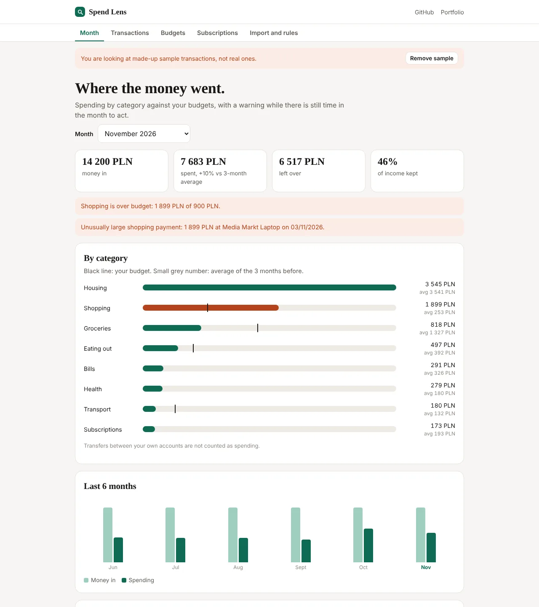

The problem
People want to know where their money goes, and get a warning while there is still time to act, without handing their bank login to a third party.

What it does
- Import. Polish and English column names, UTF-8 and Windows-1250, lines above the header, "1 234,56" amounts, separate money in and out. Re-importing adds nothing twice.
- Categories. Built-in rules for common Polish shops, plus your own. One correction can become a rule for that place.
- Month. Spending by category against budgets and the 3-month average, a 6-month chart and the biggest places.
- Warnings. Over budget, on pace to go over by month end, and unusually large payments.
- Subscriptions. Regular payments found by pattern, with monthly and yearly cost.
Decisions
Decision
CSV, never a bank login
Works with any bank, with nothing to trust. Freshness is the tradeoff, and monthly is enough for a budget.
Decision
Rules you can see, not a model
Every category can be explained, and the user's rules always win.
Decision
Warn on pace, not only when over
A warning on the 18th can still change the month. The wording says "on pace for", not "will".
What I would do next
- Split one payment across categories.
- Shared budgets from two people's exports.
- Better place names for Polish card descriptions.
No usage data yet, so no findings. Not financial advice.